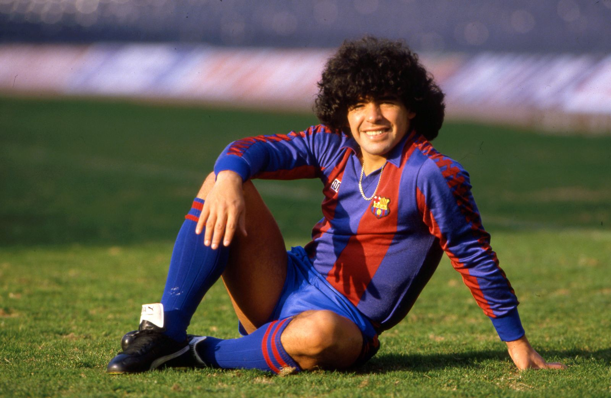
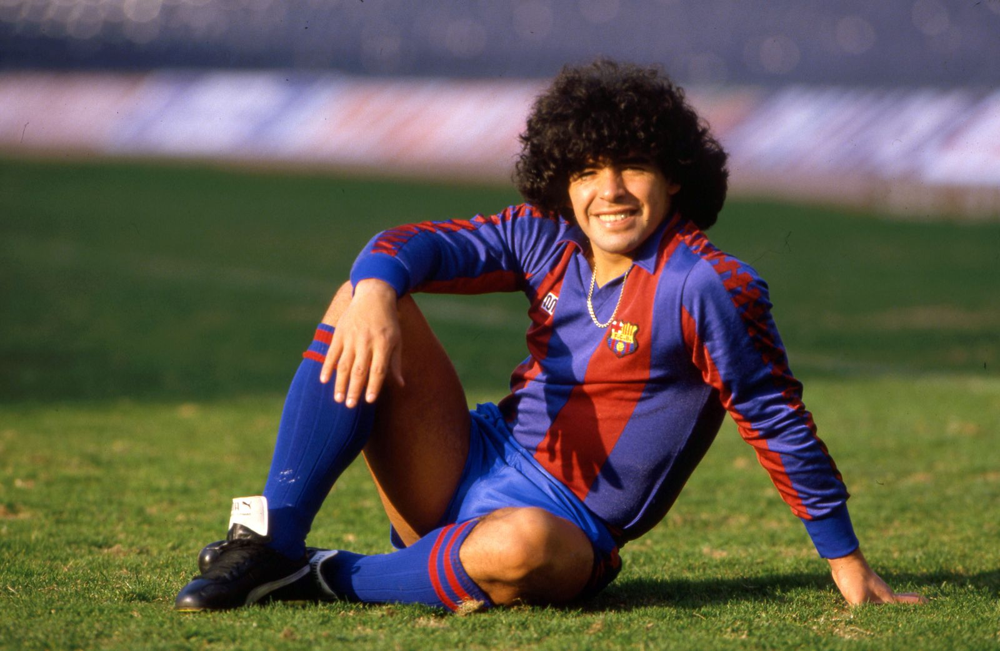

Football's Legendary Legends
"Football legends are more than just exceptional players; they embody the spirit of the game and inspire generations. These icons leave an indelible mark on football's history, showcasing skills, leadership, and sportsmanship that transcend time. From Pele to Messi, Maradona to Ronaldo, the world has witnessed extraordinary talents who became legends. Their achievements, records, and moments of brilliance continue to captivate football fans worldwide. This content page pays tribute to these immortals of the sport, delving into their remarkable journeys, controversies, and the legacy they leave behind, forever etched in the annals of football history."

Pele :The King of Football
In the pantheon of football legends, one name stands above all others - Edson Arantes do Nascimento, affectionately known as Pele. Hailing from Brazil, Pele's impact on the world of football is unparalleled, earning him the illustrious title of "The King of Football."
Read MoreDiego Maradona: The Hand of God
Diego Maradona, an Argentine football icon, is forever etched in football history as both a divine talent and a controversial figure. Revered for his extraordinary skills, he earned the moniker "The Hand of God" and became a legend of the sport.
Read More
Johan Cruyff: Total Football Visionary
Johan Cruyff, a Dutch footballing maestro, left an indelible mark on the sport and is widely regarded as one of the greatest players and visionaries in football history. He pioneered the revolutionary concept of "Total Football," forever changing the way the beautiful game is played and perceived.
Read More
Ronaldo vs. Messi: The Rivalry of Generations
The football world has been graced with two of the greatest players in history: Cristiano Ronaldo and Lionel Messi. Their individual brilliance and achievements have ignited a rivalry that has captivated fans and pundits alike, making it one of the most compelling sagas in the annals of the sport.
Read MorePele :The King of Football
In the pantheon of football legends, one name stands above all others - Edson Arantes do Nascimento, affectionately known as Pele. Hailing from Brazil, Pele's impact on the world of football is unparalleled, earning him the illustrious title of "The King of Football."
From humble beginnings in the streets of Bauru, Brazil, Pele's extraordinary talent was evident from a young age. At just 17, he made his World Cup debut in 1958 and left the world in awe. Scoring a staggering six goals in the tournament, he played an instrumental role in Brazil's first World Cup triumph, showcasing his innate ability to change the course of a match single-handedly. Pele's rise to fame continued, and he went on to secure two more World Cup titles with Brazil in 1962 and 1970. His unrivaled flair, lethal finishing, and unmatched football intelligence cemented his place as one of the greatest footballers of all time. What set Pele apart was not just his goal-scoring prowess, but also his sportsmanship and leadership on and off the field. His infectious smile and genuine love for the game endeared him to fans worldwide. Pele's influence extended beyond football, as he used his fame to promote peace, education, and social causes.
Throughout his illustrious career, Pele amassed numerous records, including being the only player to win three World Cups and scoring over 1,000 goals in professional matches. His extraordinary achievements earned him the FIFA Player of the Century award in 2000, a testament to his lasting impact on the sport. Beyond his individual brilliance, Pele's ability to inspire and unite a nation was unparalleled. In Brazil, he was not just a footballer; he was a national hero, a symbol of hope and unity. Pele's influence transcended borders, bringing joy and excitement to millions of football enthusiasts around the globe.
Today, even in retirement, Pele's legacy endures. As young footballers seek to emulate his playing style and his commitment to fair play, the name Pele continues to be synonymous with greatness on the football pitch. The King of Football's reign may have ended, but his indomitable spirit and extraordinary achievements will forever be etched in the annals of sporting history.
Resources: https://www.fifa.com/fifaplus/en/articles/pele-o-rei-brazil-king-football-world-cup-obituary
Diego Maradona: The Hand of God
Diego Maradona, an Argentine football icon, is forever etched in football history as both a divine talent and a controversial figure. Revered for his extraordinary skills, he earned the moniker "The Hand of God" and became a legend of the sport.
 

Born in Lanús, Argentina, in 1960, Maradona's football journey began at a young age. He mesmerized onlookers with his exceptional dribbling and vision on the pitch. At just 16, he made his debut for the Argentinos Juniors, and his meteoric rise saw him represent Boca Juniors before making his mark on the international stage. The pinnacle of Maradona's career came in the 1986 World Cup held in Mexico. In a quarter-final match against England, he scored two of the most iconic goals in football history. The first, controversially known as "The Hand of God," saw Maradona use his hand to punch the ball into the net, a moment that caused heated debates but also showcased his cunning and determination.
The second goal in the same match is regarded as one of the greatest goals ever scored. Receiving the ball in his own half, Maradona weaved past five English players, showcasing his sublime dribbling skills before slotting the ball into the net, a goal aptly termed "The Goal of the Century." Maradona's contribution did not stop there; he led Argentina to victory in the 1986 World Cup, leaving an indelible mark on the tournament and etching his name into football folklore. However, Maradona's life was not without struggles. Off the field, he battled personal demons and faced controversies throughout his career. His substance abuse and erratic behavior often overshadowed his brilliance on the pitch.
Despite his flaws, Maradona's impact on the sport remains immeasurable. His ability to inspire and unite fans around the world was unparalleled. In Naples, Italy, where he played for Napoli, he achieved legendary status, leading the club to its first-ever Serie A titles and further solidifying his place in football history. Diego Maradona's untimely passing in 2020 shook the football community, and tributes poured in from all corners of the globe. He may have departed, but his legacy endures. His name is forever synonymous with skill, passion, and the unbridled joy of football. Diego Maradona, "The Hand of God," will forever be celebrated as a true icon of the beautiful game
Resources: https://en.wikipedia.org/wiki/The_hand_of_God
Johan Cruyff: Total Football Visionary
Johan Cruyff, a Dutch footballing maestro, left an indelible mark on the sport and is widely regarded as one of the greatest players and visionaries in football history. He pioneered the revolutionary concept of "Total Football," forever changing the way the beautiful game is played and perceived.

Born in Amsterdam in 1947, Cruyff's talent was evident from a young age. His ability to read the game, exceptional technique, and unparalleled creativity on the field set him apart. Cruyff's career reached its zenith during the 1970s, as he dazzled the football world with his skills and led the Netherlands national team to unprecedented heights. Central to Cruyff's football philosophy was the idea of Total Football, a tactical system where players were not confined to specific positions but possessed the ability to interchange seamlessly during a match. This fluid approach revolutionized team dynamics, as defenders could become attackers, and vice versa, leading to mesmerizing gameplay characterized by constant movement and versatility. His time at Ajax and FC Barcelona showcased the true essence of Total Football, and his influence extended beyond the pitch. Cruyff's footballing acumen later transitioned into his managerial career, where he continued to shape the game and inspire future generations of players and coaches.
In 1988, Cruyff guided the Netherlands to victory in the UEFA European Championship, further validating his footballing brilliance. His managerial tenure at FC Barcelona was equally transformative, as he laid the foundation for the club's future successes and introduced the famous La Masia youth academy, emphasizing technical development and promoting homegrown talent. Cruyff's legacy as a player, manager, and football philosopher endures even after his passing in 2016. His impact on Barcelona's "tiki-taka" style and the principles of Total Football continues to be visible in the modern game. Countless football luminaries, such as Pep Guardiola and Xavi Hernandez, credit Cruyff as their mentor, attesting to his profound influence on their careers and coaching philosophies.
Johan Cruyff's Total Football vision remains an enduring hallmark of the sport, inspiring generations to play with flair, intelligence, and creativity. A true revolutionary and visionary, Cruyff's name is forever etched in football history as the architect of a playing style that transcends time and remains a testament to the beauty of the game.
Resources : https://www.bbc.com/sport/football/35898337
Ronaldo vs. Messi: The Rivalry of Generations
The football world has been graced with two of the greatest players in history: Cristiano Ronaldo and Lionel Messi. Their individual brilliance and achievements have ignited a rivalry that has captivated fans and pundits alike, making it one of the most compelling sagas in the annals of the sport.


Cristiano Ronaldo, the Portuguese sensation, possesses an unparalleled combination of speed, power, and goal-scoring prowess. His aerial ability and long-range shooting have made him a nightmare for defenders, while his dedication to physical fitness has allowed him to maintain peak performance well into his thirties. Ronaldo's illustrious career has seen him triumph in multiple leagues, lifting league titles in England, Spain, and Italy, and securing numerous individual accolades, including five Ballon d'Or awards. On the other side of the rivalry stands Lionel Messi, the Argentine magician. Messi's mesmerizing dribbling, sublime close control, and unrivaled playmaking abilities have earned him the moniker "The Flea." His vision and precision in front of goal have shattered records, making him FC Barcelona's all-time leading scorer and the record-holder for most Ballon d'Or wins, with seven to his name. Like Ronaldo, Messi's trophy cabinet is replete with domestic and international honors, further fueling the debate about who truly reigns supreme.
The Ronaldo-Messi rivalry reached its zenith when the two faced off multiple times in epic UEFA Champions League clashes, often representing their respective clubs, Real Madrid and Barcelona. Their head-to-head encounters have produced unforgettable moments and unforgettable debates among fans, who endlessly discuss who is the better player. However, beyond the on-pitch rivalry, Ronaldo and Messi share mutual respect. Both have praised each other's abilities, acknowledging the impact they have had on each other's careers and the motivation they draw from competing at such an elite level.
As both players approach the twilight of their careers, football fans worldwide will forever cherish the Ronaldo-Messi rivalry. Regardless of individual allegiances, their footballing genius has enriched the sport, inspiring future generations of players and captivating a global audience. The debate over who is the better player may never be definitively settled, but one thing remains certain: Cristiano Ronaldo and Lionel Messi are football titans whose names will forever be synonymous with greatness.
Resources : https://www.aljazeera.com/sports/2022/11/24/ronaldo-versus-messi-who-has-the-better-international-record